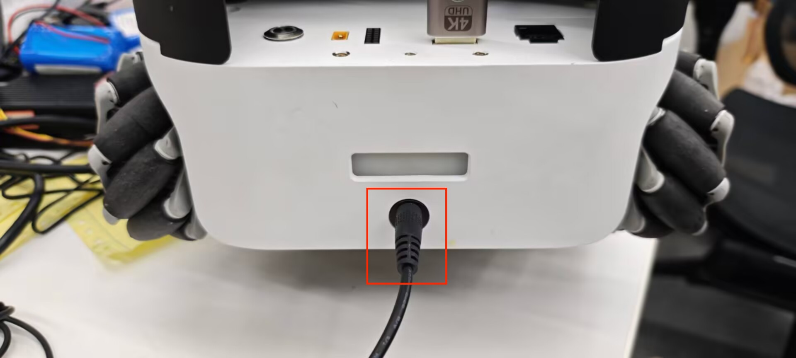
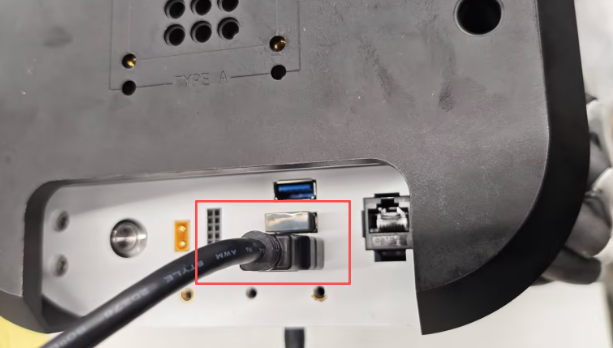
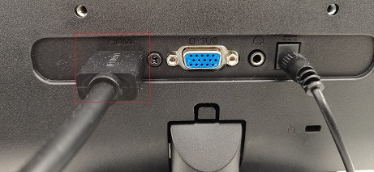
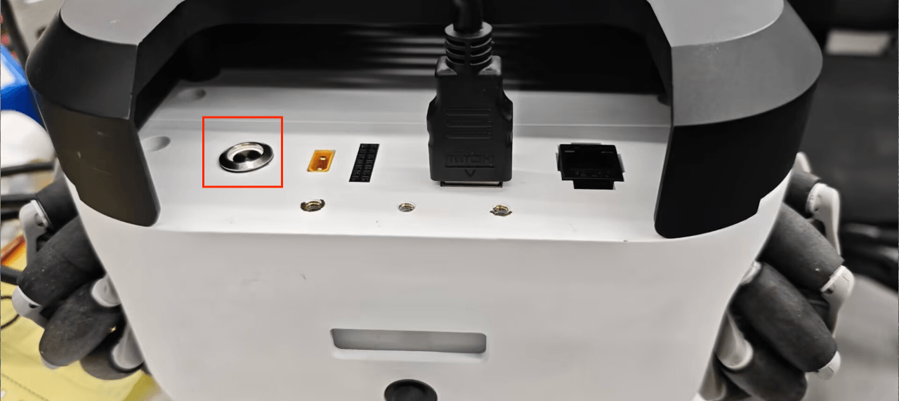
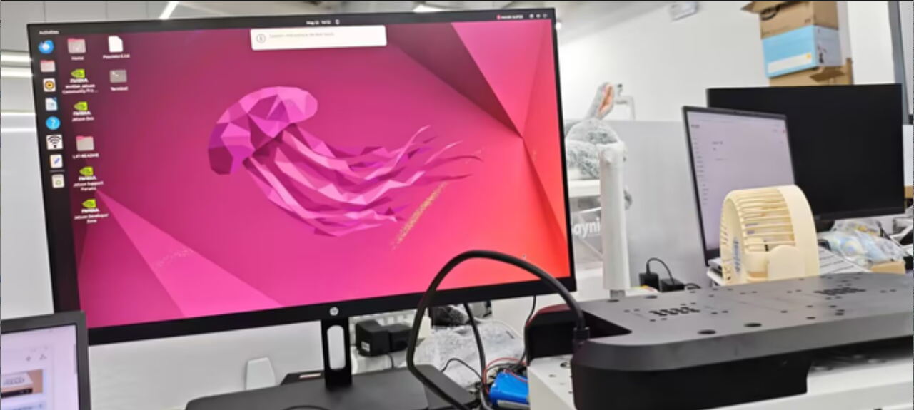

开机检测指南
本章内容介绍启动测试指南，目的是在使用 myagv 开发功能之前确保硬件功能正常。这对后续 myagv 软件功能的顺利运行至关重要。如果在启动测试指导过程中出现任何问题，请联系技术支持寻求帮助。
1 外部电缆连接
操作前，请确认您已阅读本章的安全说明，以确保 安全运行.
由于 myagv 快递安全的限制，用户刚拿到 myagv 时，电池电量一般都很低。此时，电量不足以启动 myagv，因此需要为 myagv 充电。从配件盒中取出 25.2V 电源适配器，连接直流电源为 myagv 充电。

产品配件包括 HDMI 电缆和蓝牙控制器。我们将它们全部连接到 myagv，然后还需要再准备一个带 HDMI 接口的显示器和一个 USB 键盘和鼠标。

将 HDMI 电缆连接到显示器。

2 开机状态显示
连接必要的外部设备后，按下电源按钮启动 myAGV Plus。

此时此刻，你会观察到以下现象：
- 1 按下电源按钮后，按钮将亮起白光。
- 2 myagv 后部的 LED 灯会闪烁，然后保持稳定。
- 3 显示器将显示系统信息，并成功进入操作系统桌面。

如果系统无法成功启动，可能是以下常见问题造成的。如果 myagv 仍然无法进入系统，请联系技术支持人员协助排除故障：
按下电源按钮，但按钮指示灯不亮.
- 锂电池已进入电池保护模式。电压过低，无法为 myagv 供电。请使用 25.2V 电源适配器为 myagv 充电。
- 锂电池已进入电池保护模式。电压过低，无法为 myagv 供电。请使用 25.2V 电源适配器为 myagv 充电。
电源按钮的指示灯保持稳定的白色，后部 LED 灯也点亮，但显示器上没有显示。
- 请检查 HDMI 电缆是否损坏，显示器电源是否打开。您可以尝试更换 HDMI 电缆或显示器。如果尝试这些步骤后问题仍然存在，则表明 myagv 的内部接口已损坏。请联系客户支持部门寻求进一步帮助。
系统启动失败，无法成功进入系统桌面。
- 系统文件已损坏。您可以尝试 用最新的镜像系统替换它们。